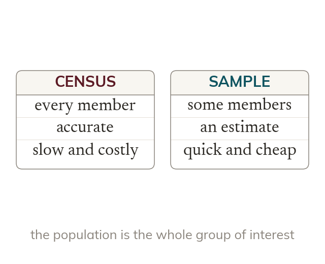
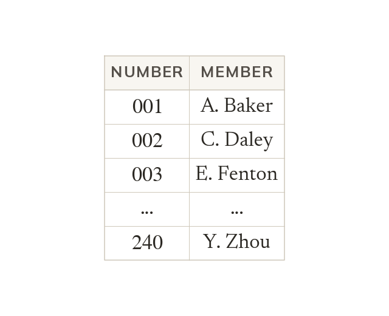
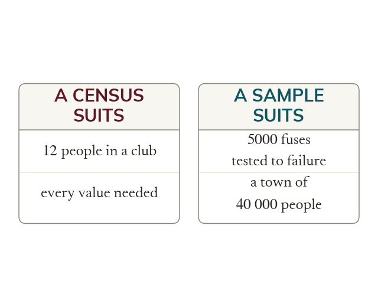
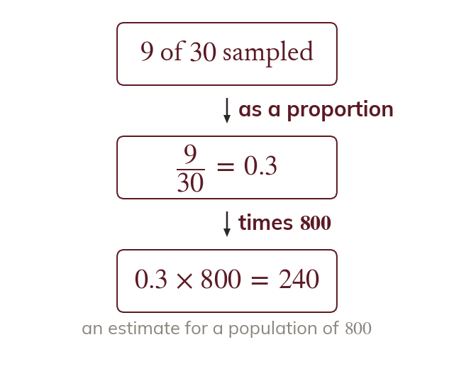
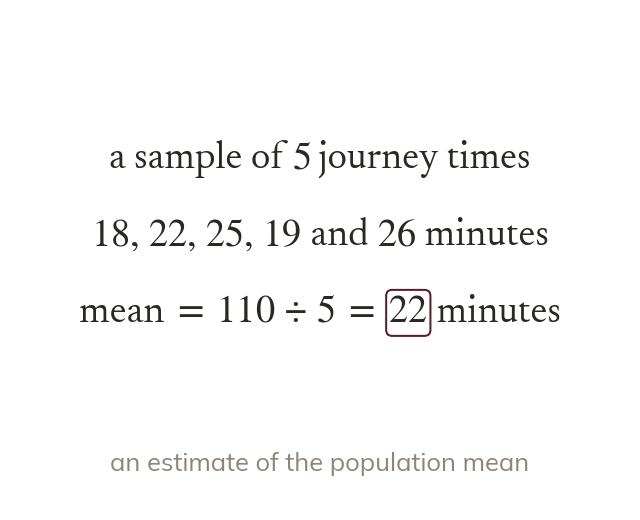
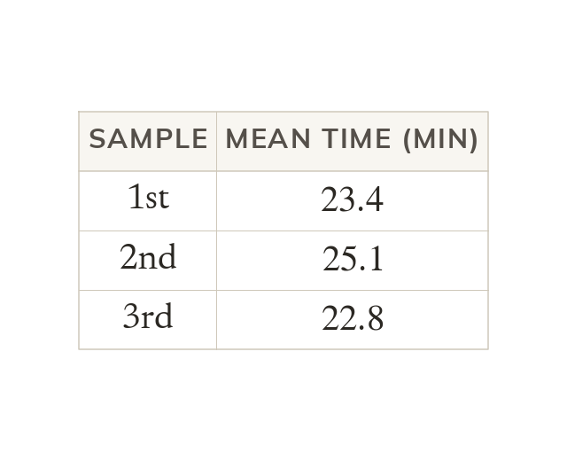

Population and census
The population is every item of interest. A census observes or measures every member of it.
Statistics starts with a question about a whole group, and with deciding whether to ask every member or only some of them. The next lessons choose the members of a sample, at random and then not at random.
Work down the page at your own pace. Write every answer in your book first, then click to check it.
Read each card, then follow the worked examples one step at a time.

The population is every item of interest. A census observes or measures every member of it.

Each individual member is a sampling unit. A named or numbered list of the units is a sampling frame.

A census suits a small population or one where every value is needed. A sample suits a large population, or a test that destroys the item.
Pick an answer. If it's wrong, the feedback tells you which mistake it was.
Write the blanks in your book first, then tap each one to check.
Read each card, then follow the worked examples one step at a time.

A sample proportion estimates the population proportion. Multiply it by the population size to estimate a number.

The mean of a sample estimates the mean of the population. It is an estimate, not the true value.

Two samples from the same population usually give different results. A larger sample usually gives a more reliable estimate.
Pick an answer. If it's wrong, the feedback tells you which mistake it was.
Write the blanks in your book first, then tap each one to check.
Finished? Next lesson: S1.2 Random Sampling.
For each skill, tap the one that is true for you today. Your Revise pages start with anything you mark Not yet.
Your ratings are saved on this device only.
Log in, then search for a code to practise that skill.